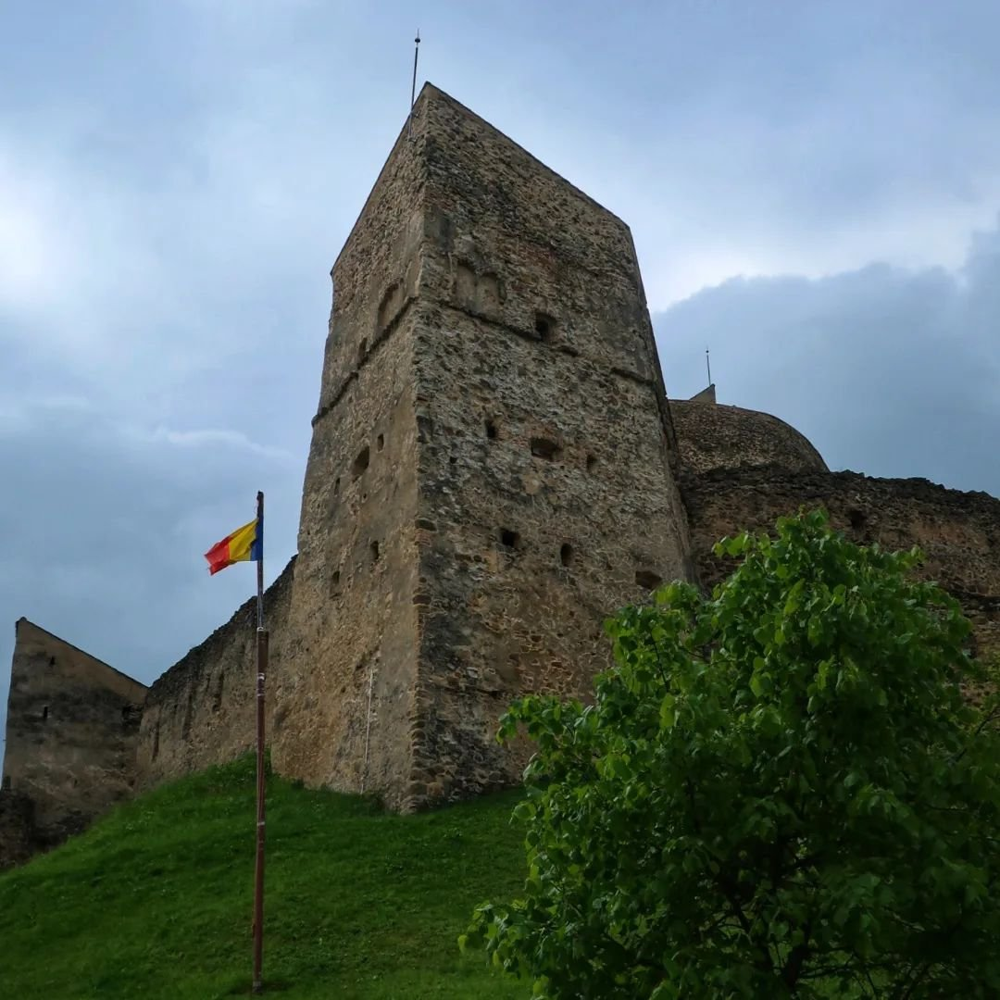
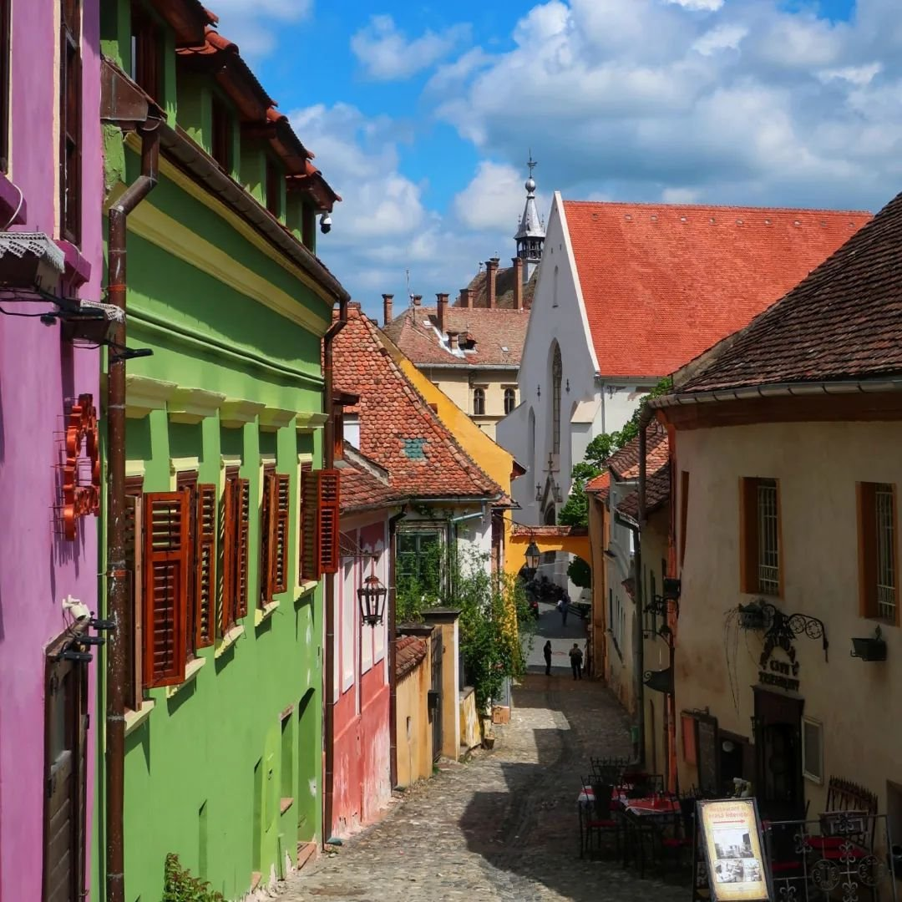
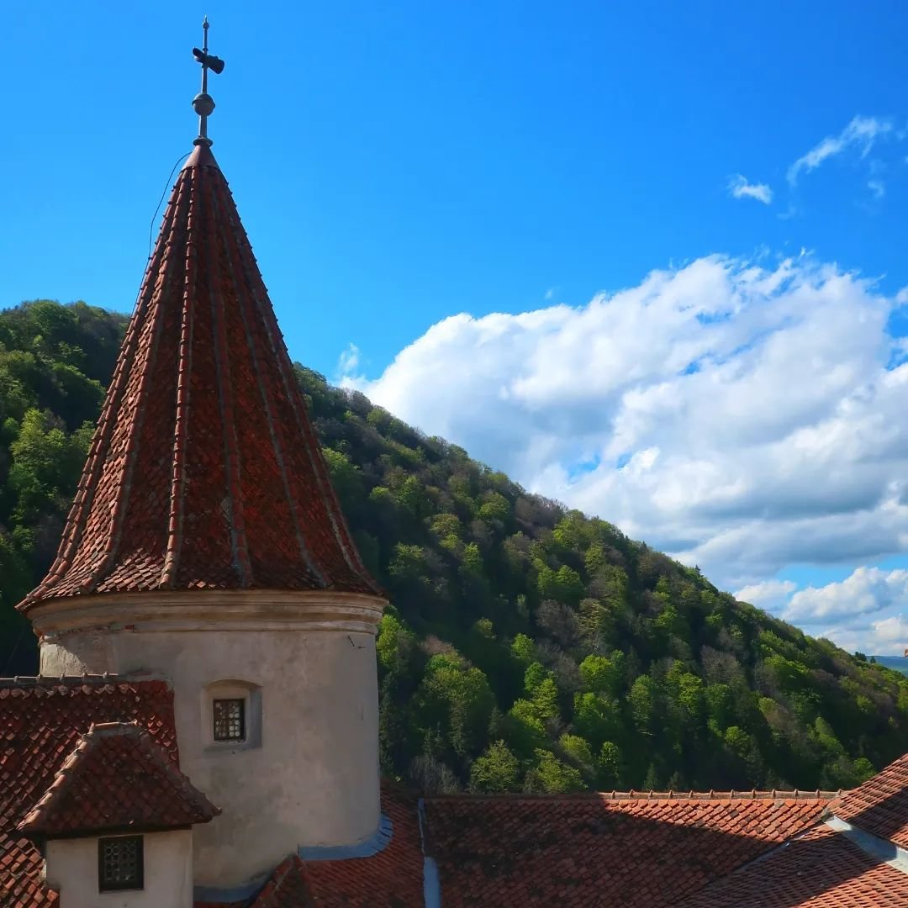
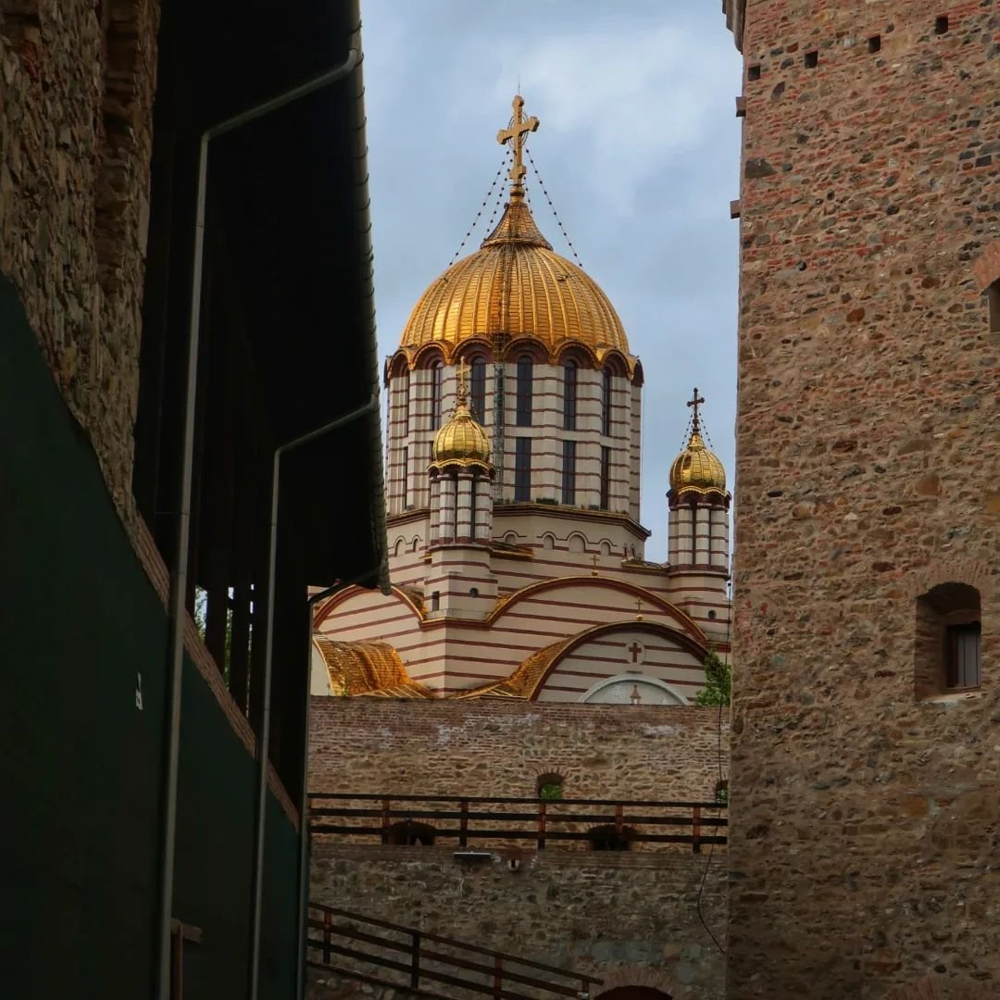
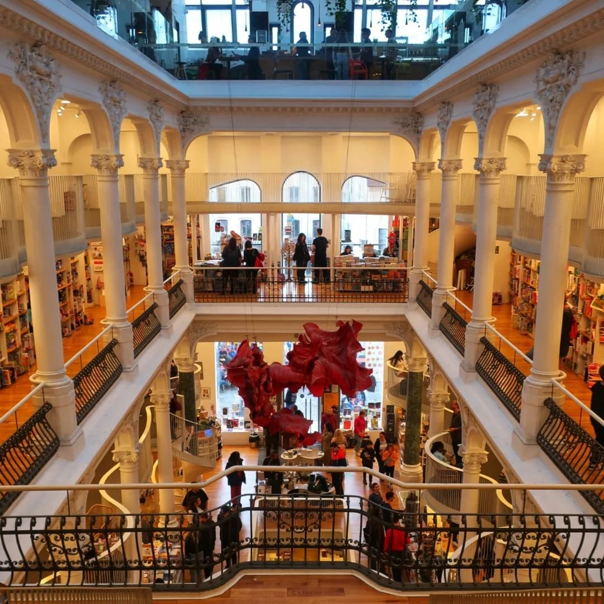
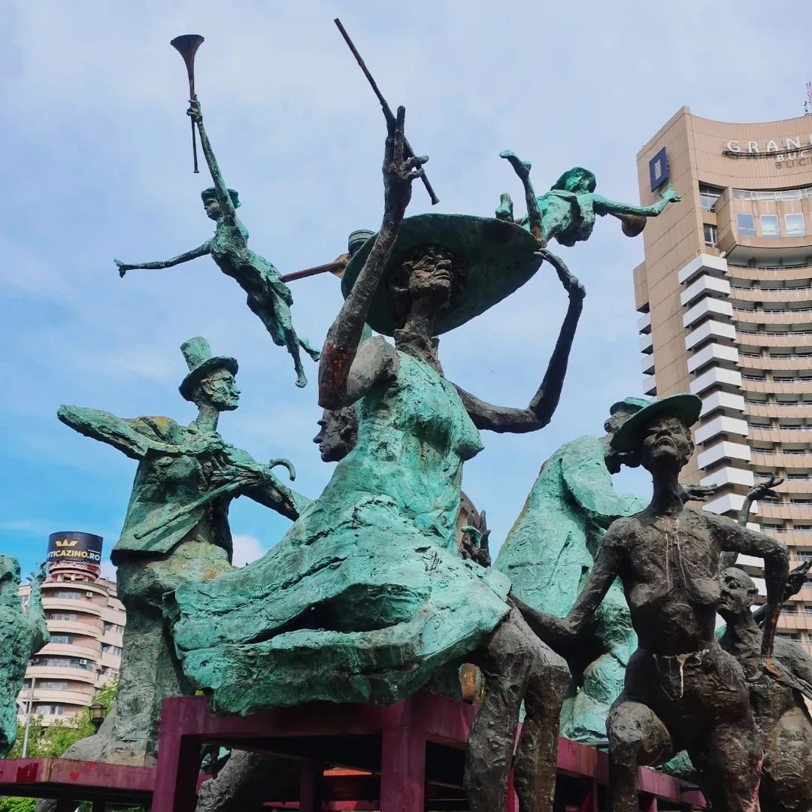
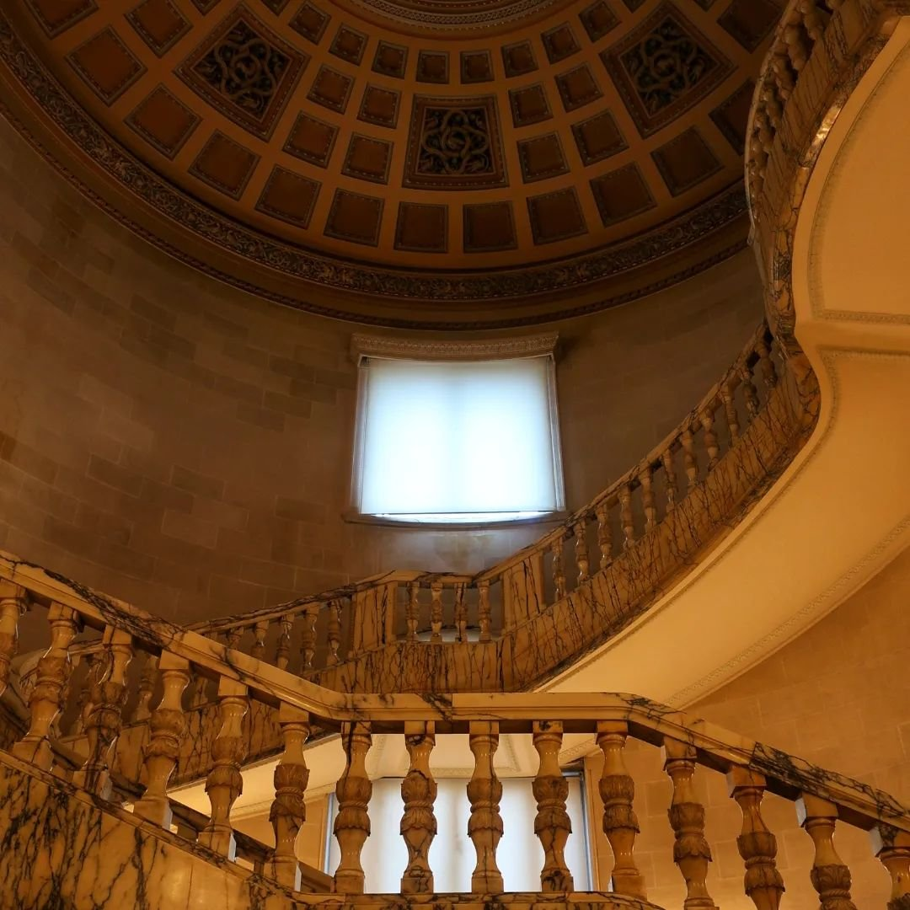
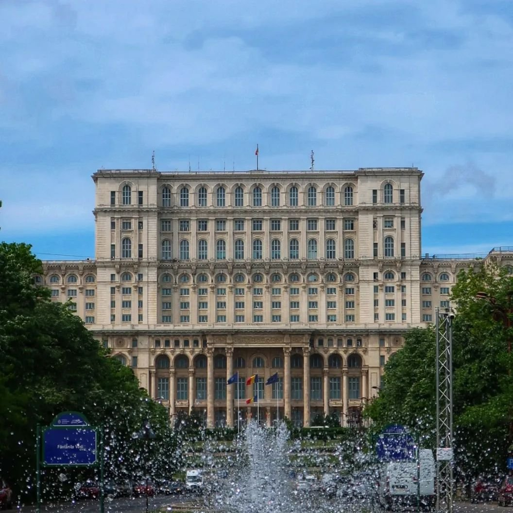

Discovering Romania: Our April 2024 Road Trip through Bucharest and Transylvania

In April 2024, we embarked on an unforgettable road trip through Romania, exploring the vibrant capital of Bucharest and the enchanting region of Transylvania. Our journey began in Bucharest, where we were captivated by the blend of historical charm and modern energy. We strolled through the picturesque Old Town, admiring the stunning architecture and enjoying the lively atmosphere of its cafes and restaurants.
We visited the imposing Palace of the Parliament, one of the largest administrative buildings in the world, and learned about Romania's rich history at the National Museum of Romanian History. The serene Cismigiu Gardens offered a peaceful retreat from the bustling city, while the Village Museum provided fascinating insights into traditional Romanian life.
Leaving Bucharest, we headed towards Transylvania, a region steeped in myth and legend. Our first stop was the medieval town of Brasov, where we explored the impressive Black Church and enjoyed the charming streets of the old town. We then visited the iconic Bran Castle, often associated with the Dracula legend, and marveled at its dramatic setting and intriguing history.
Continuing our journey, we drove through the breathtaking landscapes of the Carpathian Mountains, stopping in the quaint village of Sinaia to visit the stunning Peles Castle. This fairytale-like palace amazed us with its opulent interiors and beautiful gardens.
On our way to Transylvania, we made a stop in Pitești, exploring its charming streets and enjoying the local cuisine. Our next destination was the picturesque town of Sighisoara, the birthplace of Vlad the Impaler, the real-life inspiration for Dracula. We wandered through its well-preserved medieval citadel, taking in the colorful houses and historic landmarks such as the Clock Tower and the Church on the Hill.
We also explored the fortified churches of Viscri and Biertan, both UNESCO World Heritage Sites, which offered a glimpse into the region's Saxon heritage. Our road trip continued to the lively city of Sibiu, known for its stunning architecture, vibrant cultural scene, and the picturesque Piata Mare (Big Square).
As we made our way back to Bucharest, we stopped at the impressive Curtea de Arges Monastery, a masterpiece of Romanian Orthodox architecture. The monastery's serene atmosphere and intricate details provided a perfect end to our journey.
This road trip through Romania was a perfect blend of history, culture, and natural beauty, offering unforgettable experiences at every turn. From the bustling streets of Bucharest to the legendary castles of Transylvania, Romania captivated us with its rich heritage and stunning landscapes.








 Bordeaux
Bordeaux
 Tallin & Riga Christmas Markets
Tallin & Riga Christmas Markets
 Barcelona, Vic & Girona
Barcelona, Vic & Girona
 Skopje, North Macedonia
Skopje, North Macedonia